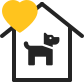

Благотворительное общественное объединение защиты животных
Наша цель: помощь бездомным животным. Также мы поддерживаем хвостиков, которые оказались в пункте отлова и временного содержания в Гродно.
У животных, находящихся в пункте отлова и временного содержания бродячих животных, есть всего несколько дней до усыпления...
Тут большие добрые сердца помогают жить маленьким сердечкам
Ежедневно в пункт временного содержания, путём отлова, попадают безнадзорные собаки и коты. По закону, у животных находящихся в САХе есть всего лишь несколько дней, чтобы найти прежнего или обрести нового хозяина. В противном случае невостребованных животных ждёт УСЫПЛЕНИЕ! Здесь вы сможете найти своего как потерявшегося, так и нового верного друга!
Если нет возможности забрать хвостика, вы можете помочь нам финансово или другой материальной помощью. Еще нам всегда нужны добрые и отзывчивые люди - волонтеры, без вас очень трудно!
-
Дать хвостику дом или взять на передержку
-
 Перечислить деньги в фонд помощи
Перечислить деньги в фонд помощи -
Привезти корм, лекарства или другие вещи
-
 Доставить животным еду или отвезти в больницу
Доставить животным еду или отвезти в больницу -
 Выгуливать, кормить, мыть или лечить хвостиков
Выгуливать, кормить, мыть или лечить хвостиков